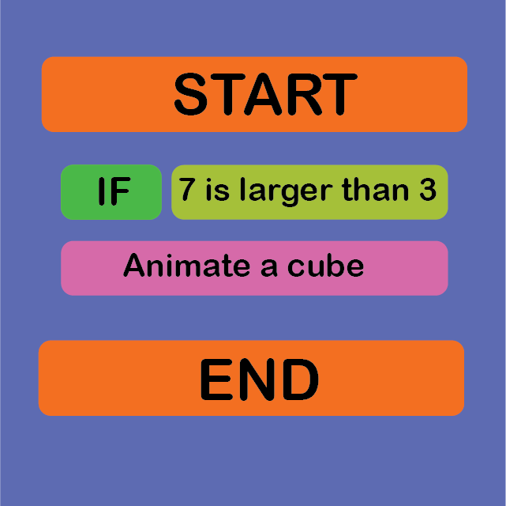
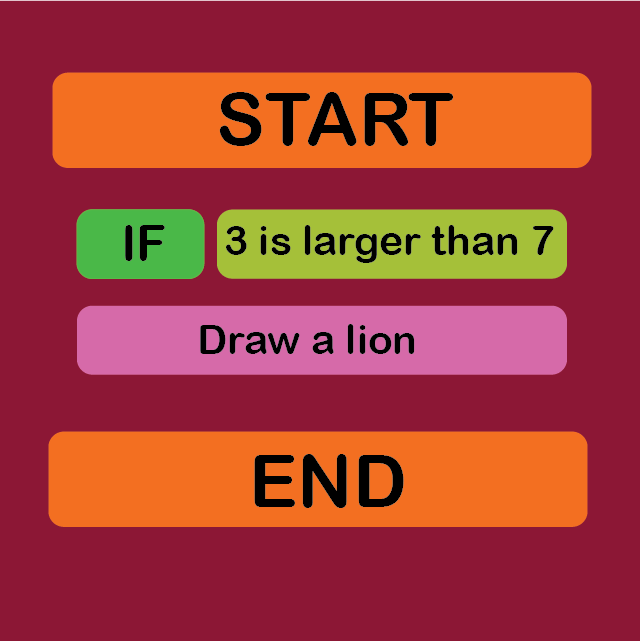
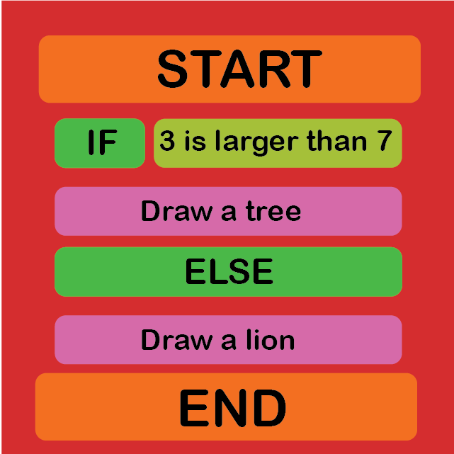
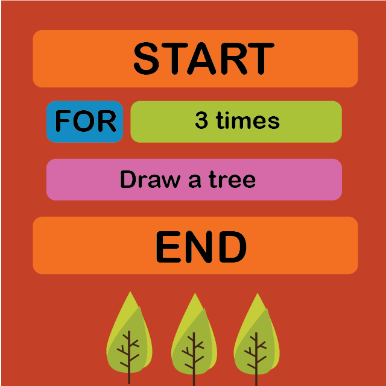
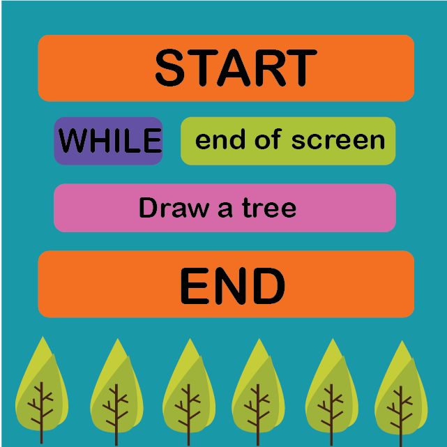

What is Code Notes?
Code Notes is a simple programming language to teach the basics structures of programming. The outputs of the language can be compiled with the Code Notes mobile app, which shares the same name. With Code Notes we offer tangibility with affordability. Simple programming blocks can be printed from any computer in any size. So, children can play with papers and create simple programs. They can see immediate outputs from the mobile app.Programming Blocks

Start-End Blocks
Every Code Notes program should start with "START" block and end with "END" block. If the mobile camera recognizes an "END" card, it stops interpreting the rest of the program. If there is no "START" block at the beginning the program won't compile.

IF Block
You should place a logical statement near of the "IF" block. If the logical statement is true, compiler will produce the output between the IF-ELSE blocks. If the logical statement is false, compiler will produce the output between the ELSE-END blocks.

Logical Statements
It is either a true statement or a false statement. It cannot not be true or false at the same time. You can also define your own logical Statements from the mobile app.

ELSE Block
If we have two different outputs for different conditions of the logical outputs, you will probably need to place an "ELSE" card.

FOR Loop
If you want to see multiple outputs from the same card, you can use "FOR" block to produce such a structure.

WHILE Loop
You should also use a logical statement with the "WHILE" card. While the logical statement is true, it will print the output.Theory and Design
Programming has become an essential skill for today’s education. There are different constructivist methods to create learning activities using technology to build programming skills and improve computational thinking abilities. Active interaction between education material and children increases the collaboration in classrooms. To foster this interaction, one method can be making learning process more playful. For instance, Scratch (scratch.mit.edu) is a free block-based language that creates a game environment for code education, however it does not include tangible components. Previous studies suggest that playfulness can be rendered more effective with tangible tools. Therefore, programming environments like Lego Mindstorms and Google Bloks were developed to create tangible and playful environments for code-learning. Yet, these solutions with tangible blocks are quite costly, and this prevents them to be used by the majority. As a result, we believe that a low-cost tool is needed to reach children worldwide.In this context, we have developed an open-source tangible programming tool, Code Notes, which is comprised of an Android app and programming cardboards. These cardboards correspond to blocks that can be combined to create different kinds of algorithms in block-based languages. Learners can order them one under another to create meaningful. When the ordering is done, learners scan these cardboards by the real-time camera compiler that is included in the Android app. Upon scanning, Code Notes App recognizes the blocks and compile them into an action that can trigger different events (i.e. drawing a tree). Programming cardboards are printable blocks, so they are low-cost and accessible as an online PDF file. In addition to the cardboards and app, we also created online tutorials to teach how to use these cards and build essential programming blocks with Code Notes.